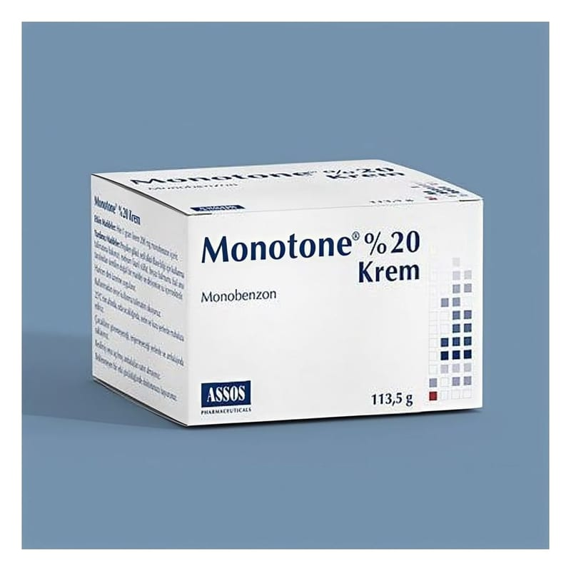

Monotone %20 Krem, 113,5 g

Ne için kullanılır
KT · Bölüm 1MONOTONE®, polipropilen koruyucu kapak ve polipropilen kapak ile kapatılmış 113,5 g’lık kavanoz, karton kutuda kullanma talimatı ile beraber kullanıma sunulmaktadır. MONOTONE®, monobenzon adlı etkin maddeyi içeren, beyaz ya da beyaza yakın renkli, homojen görünümlü bir kremdir. MONOTONE®, diğer tedavilere dirençli, ciddi kozmetik sorun oluşturan yaygın vitiligoda (deride süt beyazı lekeler halinde kendini gösteren deri hastalığı) lokal alanlarda kalan ve vitiligolu deriyi çevreleyen normal deri renginin kalıcı olarak açılması amacıyla haricen kullanılır. Geniş yüzey alanına uygulanması uygun değildir. Bu ilacı kullanmaya başlamadan önce bu KULLANMA TALİMATINI dikkatlice okuyunuz, çünkü sizin için önemli bilgiler içermektedir. • Bu kullanma talimatını saklayınız. Daha sonra tekrar okumaya ihtiyaç duyabilirsiniz. • Eğer ilave sorularınız olursa, lütfen doktorunuza veya eczacınıza danışınız. • Bu ilaç kişisel olarak sizin için reçete edilmiştir, başkalarına vermeyiniz. • Bu ilacın kullanımı sırasında, doktora veya hastaneye gittiğinizde doktorunuza bu ilacı kullandığınızı söyleyiniz. • Bu talimatta yazılanlara aynen uyunuz. İlaç hakkında size önerilen dozun dışında yüksek veya düşük doz kullanmayınız.
MONOTONE®, vücutta bulunan diğer lekelerin açılması amacıyla veya cilt ağartıcı olarak kullanılmaz. Bu ürün, yaygın (vücut yüzey alanının yüzde 50’sinden daha fazlası) vitiligo olan hastalarda haricen uygulanır. Bu ürün, bal arısı tarafından üretilen doğal bir madde olan beyaz balmumu içermektedir.